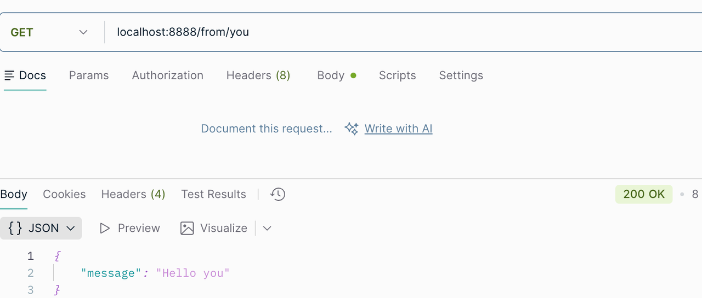
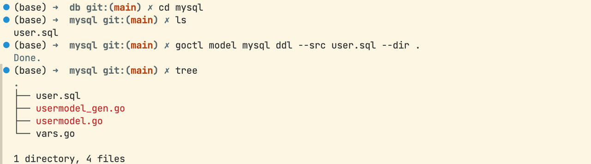
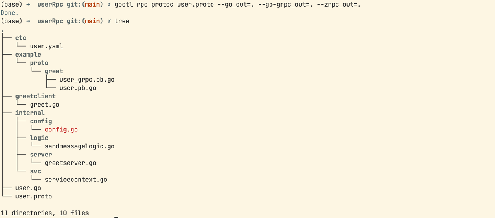
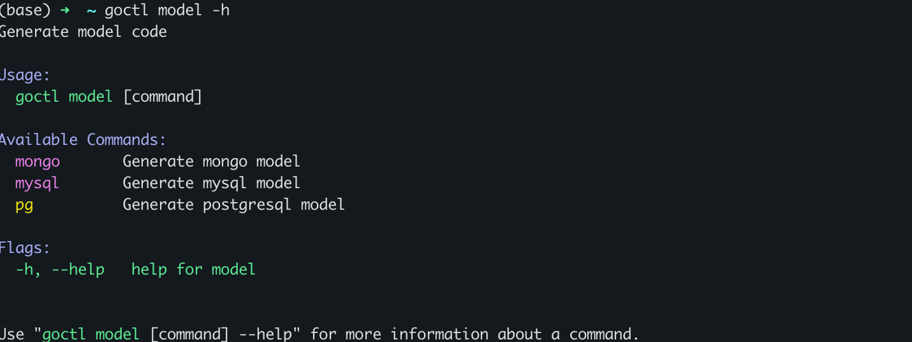

Go-Zero 微服务框架

简介
go-zero是一个集成了各种工程实践的 web 和 rpc 框架。通过弹性设计保障了大并发服务端的稳定性，经受了充分的实战检验。
go-zero 包含极简的 API 定义和生成工具 goctl，可以根据定义的 api 文件一键生成 Go, iOS, Android, Kotlin, Dart, TypeScript, JavaScript 代码，并可直接运行。
go-zero框架能轻松获得支撑千万日活服务的稳定性，内建级联超时控制、限流、自适应熔断、自适应降载等微服务治理能力，无需配置和额外代码，微服务治理中间件可无缝集成到其它现有框架使用，极简的 API 描述，一键生成各端代码，自动校验客户端请求参数合法性，大量微服务治理和并发工具包。
go-zero框架具有强大的工具支持，尽可能少的代码编写，极简的接口，完全兼容 net/http，支持中间件，方便扩展，高性能，面向故障编程，弹性设计，内建服务发现、负载均衡，内建限流、熔断、降载，且自动触发，自动恢复，API 参数自动校验，超时级联控制，自动缓存控制，链路跟踪、统计报警等，高并发支撑，稳定保障了疫情期间每天的流量洪峰。
下面是官方给的架构图

安装和快速使用
安装
这里主要是go-zero、goctl和go-zero的安装指令，可以参照官方的文档：快速开始
注意先安装go，关于go的安装和配置可以见博客：g的安装和使用
# go-zero安装
go get -u github.com/zeromicro/go-zero@latest
# goctl安装
go install github.com/zeromicro/go-zero/tools/goctl@latest
# protoc安装
goctl env check --install --verbose --force
快速使用
Api demo
在这里我创建了一个文件夹GoZeroDemo存放go-zero微服务框架学习期间的相关代码，之后初始化项目，并使用gpctl自动生成简单API相关文件
# 创建并进入项目
mkdir GoZeroDemo && cd GoZeroDemo
# 初始化项目并命名
go mod init gozerodemo
# 使用goctl创建API服务
goctl api new greet
# 安装缺失的依赖
go mod tidy下面是生成的代码框架，包括配置文件、main文件、配置定义文件、网络路由相关文件、请求逻辑文件、业务逻辑相关文件以及业务相关结构体文件等等。

之后我们根据官方说明，在greetlogic.go中实现Greet，做简单的 Say Hello，测试效果如下，一个简单的单体服务就构建完成了。

通过简单的使用go-zero我们可以发现，框架的作用就是帮你生成配套代码，你只需要完成相应的业务逻辑。
gRPC demo
继续在GoZeroDemo目录下创建gRPC服务aorange
# 使用goctl创建RPC服务
goctl rpc new aorange
# 安装缺失的依赖
go mod tidy
之后按照文档进行简单修改测试：gRPC-demo

MySQL
创建sql文件，之后通过goctl生成对应的golang文件和操作方法，具体参考：mysql代码生成
goctl model mysql ddl --src user.sql --dir .
Mongo
mongo 不像 mysql 一样有建表语句，索引等集中有规律的约束信息，因此 mongo 代码的生成无需类似 sql 或者数据库链接一样的信息。，具体参考：mongo代码生成
goctl model mongo --type user --dir .
format
还可以通过goctl进行格式化，具体见：api文件格式化
goctl api format --dir demo.apiGoctl
下面是goctl相关的指令和说明，我们常用的就是api和rpc

Api

参考官方给的api示例，我们使用goctl通过api文件创建服务
首先创建项目文件夹添加user.api
之后在终端输入指令
goctl api go -api user.api -dir . -style goZerosyntax = "v1"
type (
// 定义登录接口的 json 请求体
LoginReq {
Username string `json:"username"`
Password string `json:"password"`
}
// 定义登录接口的 json 响应体
LoginResp {
Id int64 `json:"id"`
Name string `json:"name"`
Token string `json:"token"`
ExpireAt string `json:"expireAt"`
}
)
type (
// 定义获取用户信息的 json 请求体
GetUserInfoReq {
Id int64 `json:"id"`
}
// 定义获取用户信息的 json 响应体
GetUserInfoResp {
Id int64 `json:"id"`
Name string `json:"name"`
Desc string `json:"desc"`
}
// 定义更新用户信息的 json 请求体
UpdateUserInfoReq {
Id int64 `json:"id"`
Name string `json:"name"`
Desc string `json:"desc"`
}
)
// 定义 HTTP 服务
// @server 语法块主要用于控制对 HTTP 服务生成时 meta 信息，目前支持功能有：
// 1. 路由分组
// 2. 中间件声明
// 3. 路由前缀
// 4. 超时配置
// 5. jwt 鉴权开关
// 所有声明仅对当前 service 中的路由有效
@server (
// 代表当前 service 代码块下的路由生成代码时都会被放到 login 目录下
group: login
// 定义路由前缀为 "/v1"
prefix: /v1
)
// 微服务名称为 user，生成的代码目录和配置文件将和 user 值相关
service user {
// 定义 http.HandleFunc 转换的 go 文件名称及方法，每个接口都会跟一个 handler
@handler login
// 定义接口
// 请求方法为 post
// 路由为 /user/login
// 请求体为 LoginReq
// 响应体为 LoginResp，响应体必须有 returns 关键字修饰
post /user/login (LoginReq) returns (LoginResp)
}
// @server 语法块主要用于控制对 HTTP 服务生成时 meta 信息，目前支持功能有：
// 1. 路由分组
// 2. 中间件声明
// 3. 路由前缀
// 4. 超时配置
// 5. jwt 鉴权开关
// 所有声明仅对当前 service 中的路由有效
@server (
// 代表当前 service 代码块下的所有路由均需要 jwt 鉴权
// goctl 生成代码时会将当前 service 代码块下的接口
// 信息添加上 jwt 相关代码，Auth 值为 jwt 密钥，过期
// 等信息配置的 golang 结构体名称
jwt: Auth
// 代表当前 service 代码块下的路由生成代码时都会被放到 user 目录下
group: user
// 定义路由前缀为 "/v1"
prefix: /v1
)
// 注意，定义多个 service 代码块时，服务名称必须一致，因此这里的服务名称必须
// 和上文的 service 名称一样，为 user 服务。
service user {
// 定义 http.HandleFunc 转换的 go 文件名称及方法，每个接口都会跟一个 handler
@handler getUserInfo
// 定义接口
// 请求方法为 post
// 路由为 /user/info
// 请求体为 GetUserInfoReq
// 响应体为 GetUserInfoResp，响应体必须有 returns 关键字修饰
post /user/info (GetUserInfoReq) returns (GetUserInfoResp)
// 定义 http.HandleFunc 转换的 go 文件名称及方法，每个接口都会跟一个 handler
@handler updateUserInfo
// 定义接口
// 请求方法为 post
// 路由为 /user/info/update
// 请求体为 UpdateUserInfoReq
// 由于不需要响应体，因此可以忽略不写
post /user/info/update (UpdateUserInfoReq)
}
RPC

rpc采用同样的方式
相关指令和代码如下：
goctl rpc protoc user.proto --go_out=. --go-grpc_out=. --zrpc_out=.// 声明 proto 语法版本，固定值
syntax = "proto3";
// proto 包名
package greet;
// 生成 golang 代码后的包名
option go_package = "example/proto/greet";
// 定义枚举
enum Status{
UNSPECIFIED = 0;
SUCCESS = 1;
FAILED = 2;
}
// 定义结构体
message Base{
int32 code = 1;
string msg = 2;
}
message SendMessageReq{
string message = 1;
}
message SendMessage{
// 使用枚举
Status status = 1;
// 数组
repeated string array = 2;
// map
map<string,int32> map = 3;
// 布尔类型
bool boolean = 4;
// 序列号保留
reserved 5;
}
message SendMessageResp{
Base base = 1;
SendMessage data = 2;
}
// 定义 Greet 服务
service Greet {
// 定义客户端流式 rpc
rpc SendMessage(stream SendMessageReq) returns (SendMessageResp);
}
Model

以SQL为例，创建sql文件，通过下面指令生成相关代码
goctl model mysql ddl -src"./user.sql" -dir="./sql/model" -c